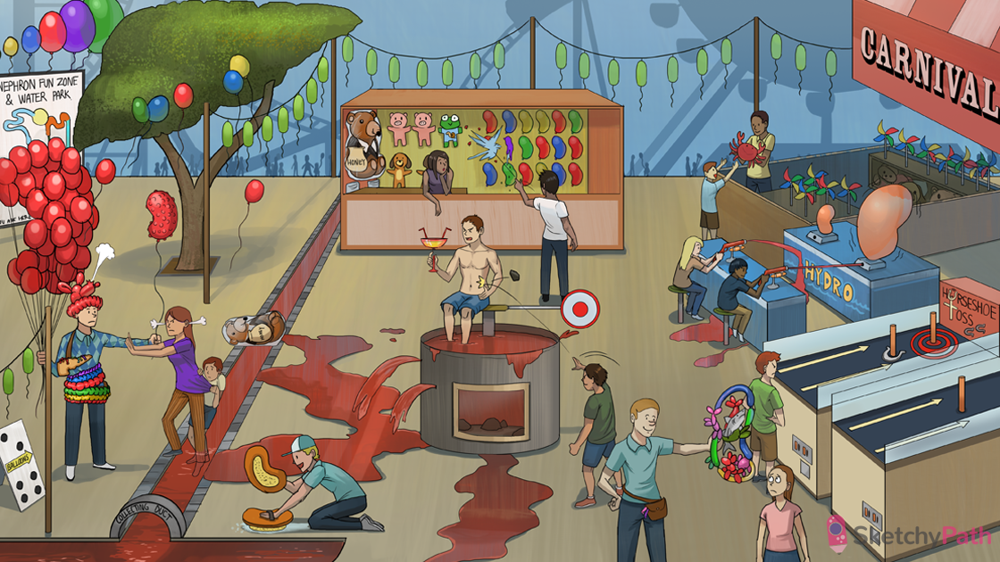

Horseshoe game: horseshoe kidney (the most common congenital renal malformation)
Caught on inferior post: during embryologic ascent, a horseshoe kidney gets stuck at the inferior mesenteric artery
X shaped pinwheel toys: Turner syndrome (monosomy X) is associated with horseshoe kidney
Cancer crab toy: horseshoe kidney increases risk of Wilms tumor
Stones in the dunk tank: congenital and cystic disorders of the kidney (e.g polycystic kidney disease) increased risk of kidney stones
Red dunk tank water: congenital and cystic disorders of the kidney (e.g polycystic kidney disease) can present with hematuria and flank pain (due to kidney stones)
Infected bladder cup: congenital and cystic disorders of the kidney (e.g polycystic kidney disease) can increase risk of urinary tract infections
Recurring bacterial lanterns: congenital and cystic disorders of the kidney (e.g polycystic kidney disease) can cause recurrent urinary tract infections
Dysplastic bunch of balloons: renal dysplasia (abnormal development of one or both kidneys) is the most common cystic disease in children
Dysplastic shark toy: renal dysplasia is associated with abnormal mesenchymal tissue (e.g. cartilage and bone)
Popped kidney balloon: renal agenesis (congenital absence of renal parenchyma)
Tightly wrapped Potter the bear: bilateral renal agenesis can result in oligohydramnios → Potter sequence (flattened nose, club feet, lung hypoplasia)
Kid hiding from bunch of kidney balloons: autosomal recessive polycystic kidney disease (ARPKD - symptomatic in early childhood)
Balloon with little cysts: ARPKD can present with bilaterally enlarged kidneys with diffuse small cysts on fetal ultrasound
Corduroy fibers: ARPKD is caused by a mutation in PKHD1 (fibrocystin gene)
Stepping in collecting duct: in ARPKD, cysts develop in the collecting ducts
Square tiles lining collecting duct: in ARPKD, cysts are lined by cuboidal epithelium
Tightly wrapped Potter the bear: ARPKD can cause oligohydramnios → Potter sequence (flattened nose, club feet, lung hypoplasia)
Bulging flank: ARPKD can present with bilateral flank masses
High pressure steam: ARPKD can cause hypertension in first months of life
Balloons caught in liver tree: ARPKD can cause cystic dilation of intrahepatic bile ducts, hepatomegaly, and hepatic fibrosis
Domino: autosomal dominant polycystic kidney disease (ADPKD - usually presents in adulthood)
Polygon pattern: ADPKD is caused by a mutation in PKD1 or PKD2 (less common) which code for polycystin-1 and polycystin-2
Nephron fun zone sign: cysts in ARPKD develop throughout the nephron
Growing balloons: cysts in ARPKD grow larger over time
High pressure steam: ADPKD can cause hypertension
Popping balloon hat: ADPKD can cause berry aneurysms in the circle of willis → subarachnoid hemorrhage
Balloons caught in liver tree: ADPKD can also present with hepatic cysts
Pancreatic balloon bag: ADPKD can also present with pancreatic cysts
Balloon belt: ADPKD can also present with diverticulosis
Central sponge gloves: medullary sponge kidney (multiple cysts in renal medulla)
Cleaning the end of the collecting duct: the cysts in medullary sponge kidney develop along the terminal collecting duct
Dilated kidney water balloon: horseshoe kidney can cause hydronephrosis